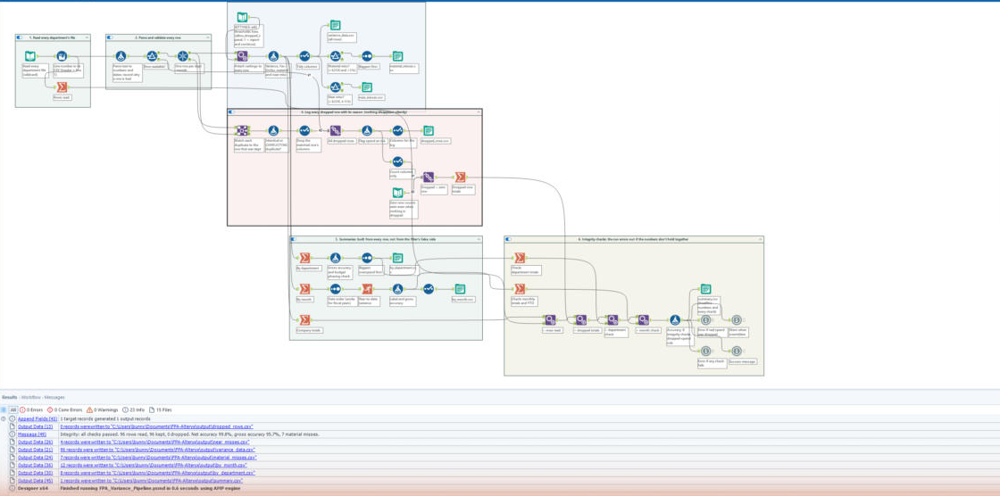

This is $28.2M of 2024 operating spend across 8 departments and 12 months, budget versus actual. The plan looks 99.8% accurate, but that's only because the misses cancel out. I added adjustable materiality thresholds that show which department-months get flagged, and why the rule needs both a dollar test and a percent test. The full pipeline is an Alteryx Designer workflow (below); this page runs the same math in the browser.
These are cost centers, so spending under budget counts as favorable. My first version of this project got that backwards and called Marketing the "top performer" for overspending by $88K.
Real department budgets don't swing 100x from one month to the next. These do. Swing = biggest monthly budget divided by smallest.
This is a practice dataset, and the monthly phasing is synthetic. The annual and department totals still hold up, but month-level patterns like the R&D Q4 underspend show the method rather than a real finding. In a real company, phasing this lumpy would be the first thing I'd question, because it makes monthly variances almost meaningless.
The real pipeline runs in Alteryx Designer. It reads each department's file with one wildcard input, logs every dropped row with its file, line and reason, builds the summaries from every row, and raises an error if the numbers don't hold together (for example, rows read must equal rows kept plus rows dropped). Alteryx is desktop software, so there's no way to run it in a browser. Download the workflow and open it in Designer, or read through it on GitHub.
